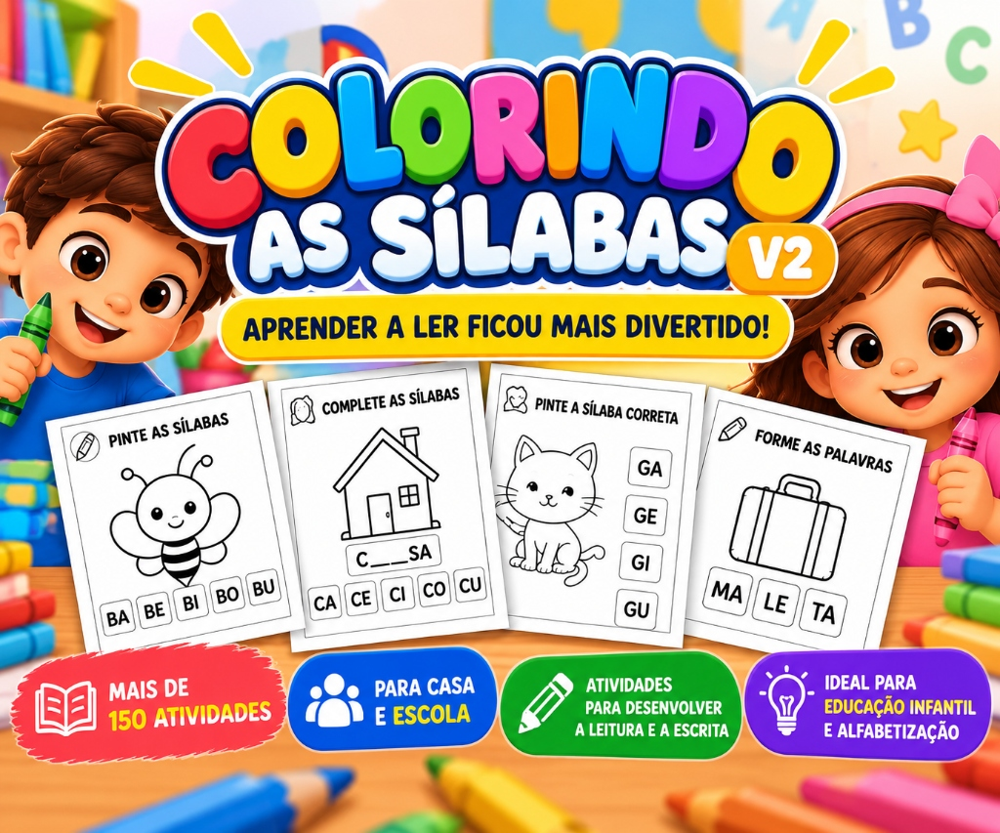
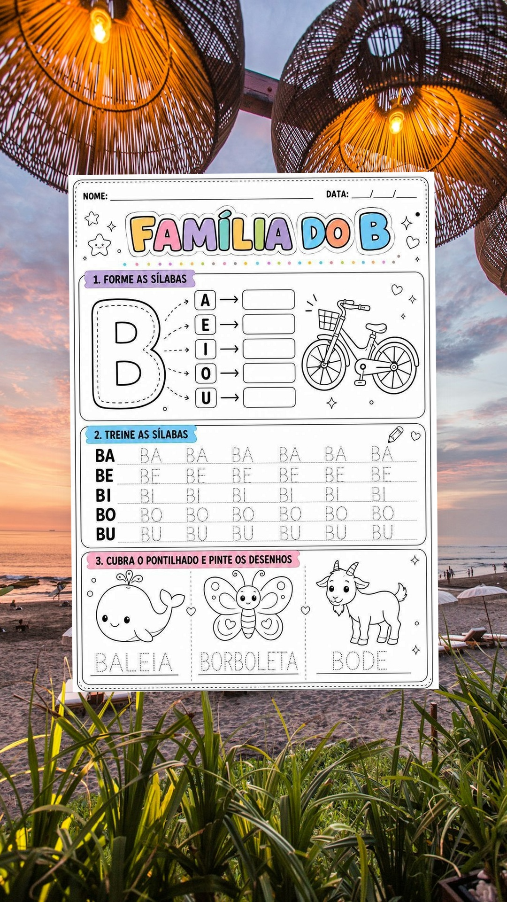
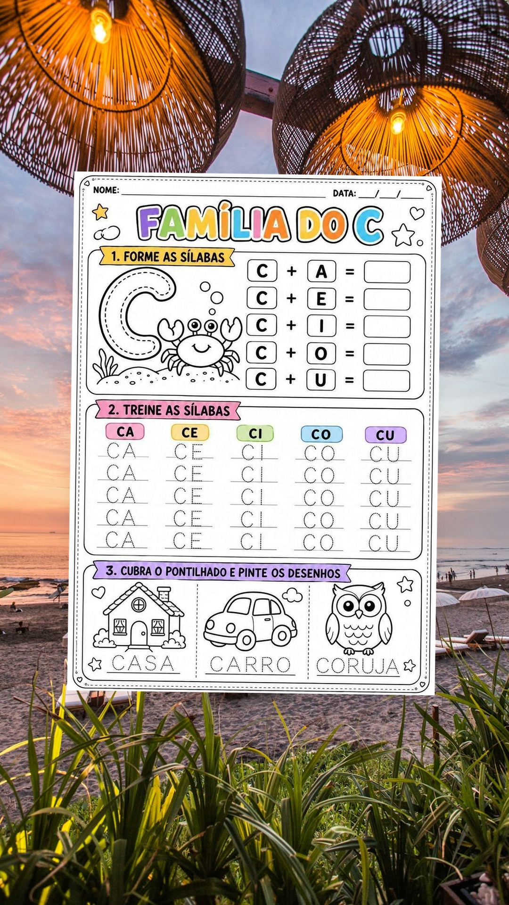
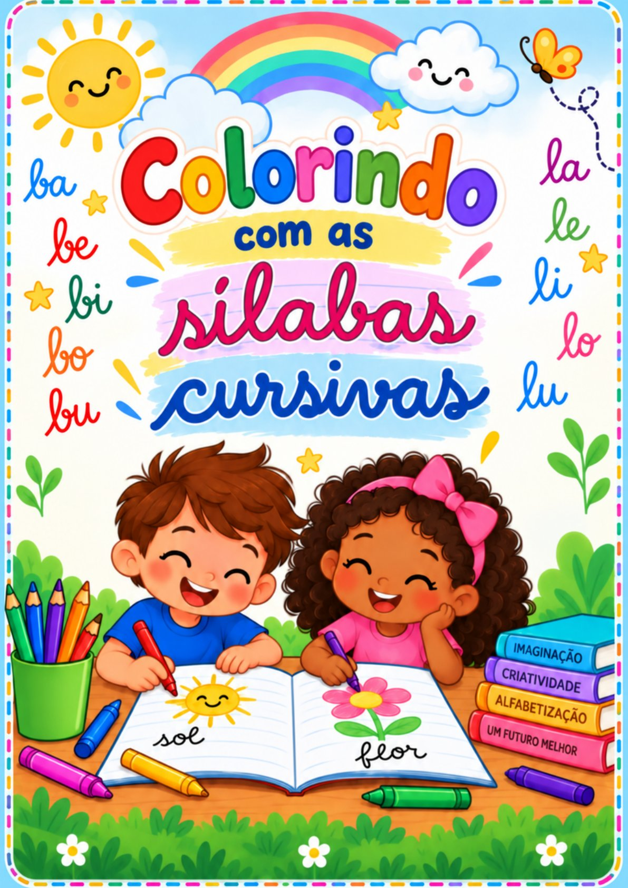
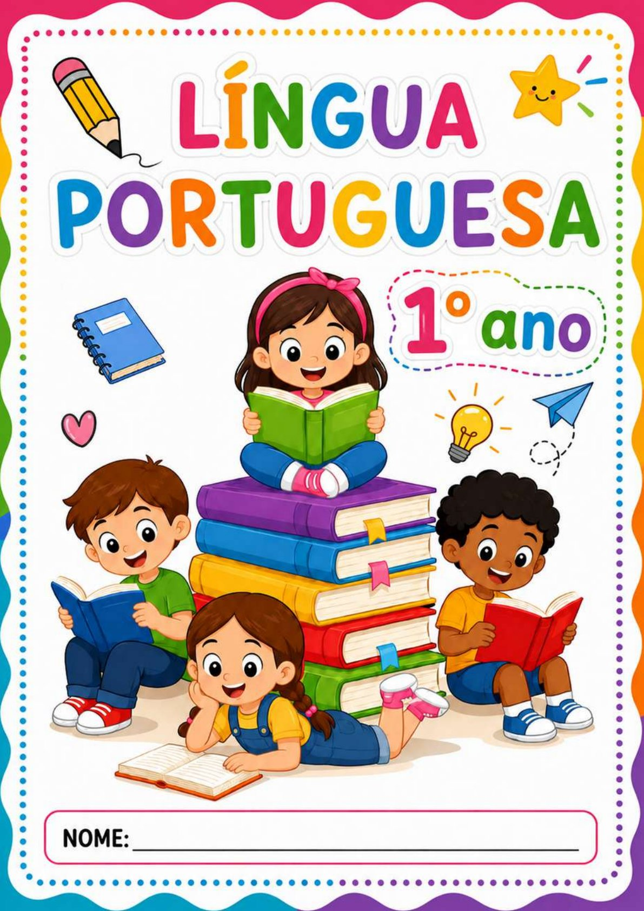
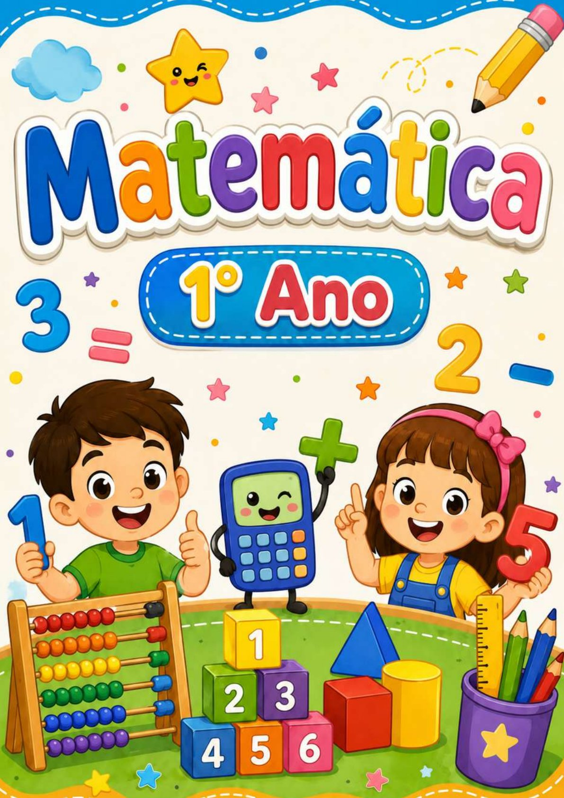

Crise de Alfabetização: Indicador do MEC revela que quase metade dos alunos do 2º ano travam nas sílabas; Teste gratuito é liberado para mães e educadoras
Balanço oficial do governo aponta que metas nacionais não foram atingidas. Professores desabafam em reportagens nacionais sobre exaustão com cópias em preto e branco. Neurocientistas liberam diagnóstico interativo de 1 minuto para mapear onde a criança travou.
Descubra a fase exata em que seu pequeno travou e como destravar em 21 dias
Responda 5 perguntas rápidas para receber o laudo pedagógico individualizado, identificando onde está travando seu pequeno na alfabetização.
Comentários da Comunidade de Mães & Professoras (148)
Mais votados"Fiz esse teste há 3 semanas. Ele sabia o alfabeto mas não juntava sílabas. O método das cores destravou a leitura dele em 2 semanas sem briga!"
"Folha de xerox preto e branco traumatiza a criança. O método de associar cores à fônica é o maior avanço pedagógico recente. Teste impecável!"
Qual é a faixa etária do seu filho(a) ou aluno(a)?
A idade define a rota de desenvolvimento neurológico de acordo com os marcos da BNCC.
O que acontece quando ele tenta ler uma palavrinha?
Selecione o obstáculo mais frequente na sua rotina com o pequeno.
Como é o clima na hora do dever ou estudo em casa?
Seja sincera: o estresse emocional bloqueia diretamente a aprendizagem da leitura.
Respire fundo: a culpa NÃO é sua e nem do seu filho!
A neurociência infantil comprovou: o cérebro de uma criança de 4 a 8 anos rejeita cartilhas escolares tradicionais em preto e branco com repetições cansativas.
Para aprender a ler com prazer, a rota neural da criança precisa de estímulo multissensorial: ela precisa ouvir o som, ver o desenho colorido e usar a própria mão com o lápis de cor. Quando isso acontece, o cérebro conecta o som à sílaba em segundos!
Quanto tempo ele consegue ficar concentrado em atividades sem telas?
Isso nos ajuda a calibrar o tempo ideal das sessões lúdicas diárias.
Qual é o primeiro nome do seu pequeno(a)?
Vamos calibrar o plano de leitura e o diagnóstico exatamente para ele.
Usado apenas para personalizar seu diagnóstico pedagógico
Se você tivesse um método de 15 minutos por dia para ensinar o(a) seu filho a juntar sílabas colorindo, você aplicaria?
Seja 100% sincera com o seu compromisso na alfabetização dele.
Analisando o perfil do(a) seu pequeno...
Mapeando a rota fonológica e os marcos de leitura da BNCC...
Diagnóstico do(a) seu filho: Fase Silábica em Transição
Com base nas suas respostas para a idade de 5 a 6 anos, o(a) seu pequeno já possui capacidade cognitiva para ler, mas está enfrentando o bloqueio da "Junção Silábica Abstrata".
O que acontece no cérebro infantil ao tentar ler?
A neurociência comprova que a leitura fluente exige a sincronização de 3 áreas cerebrais:
💡 A Solução: Ao pintar as sílabas com desenhos familiares (BOLA, BALEIA), as 3 áreas disparam juntas e a leitura acontece de forma natural em 21 dias!
Projeção de Evolução do(a) seu filho

"O maior erro é encher a criança de texto preto e branco"
"Como pedagoga e alfabetizadora há mais de 14 anos, afirmo: a criança precisa manusear o lápis de cor para fixar os fonemas. O Colorindo as Sílabas transforma a obrigação em uma brincadeira sensorial que destrava a leitura tanto na sala de aula quanto no reforço com os pais em casa."
— Profª Renata Castro, Especialista em Alfabetização e Letramento (São Paulo/SP)Por que as cartilhas da escola falham?
| Critério | Cartilha Tradicional | Colorindo as Sílabas |
|---|---|---|
| Estímulo Visual | Preto e branco (rejeitado) | Pintura ativa de cada fonema |
| Tempo de Sessão | 45 a 60 min exaustivos | 15 a 20 min prazerosos |
| Junção Silábica | Memorização mecânica | Som + Cor + Objeto Real |
| Clima em Casa | Choro, brigas e birra | A criança pede para fazer! |

Apostila Oficial Colorindo as Sílabas
O material prático estruturado para transformar a junção das sílabas simples em uma divertida sessão de pintura de apenas 15 a 20 minutos por dia.


Kit Completo de Sílabas Simples (A a Z): Cobre todas as famílias silábicas simples de forma ilustrada e sequencial + Silabário Ilustrado de Mesa.
Arquivo em PDF de Alta Resolução: Receba imediatamente no seu e-mail e WhatsApp para imprimir quantas vezes quiser.
Reduz o Uso de Celular e Telas: A criança troca os vídeos pelo lápis de cor de forma natural.
3 Kits Pedagógicos Complementares Inclusos Gratuitamente:
Como incentivo para você iniciar a rotina de 21 dias hoje mesmo, você não paga nada a mais por estes 3 materiais complementares:

Material oficial de caligrafia com todas as famílias silábicas em letra cursiva para treinar o traçado correto com lápis de cor.

Apostila master alinhada à BNCC com interpretação de texto, ordem alfabética e 2 bônus de recorte e cole lúdicos.

Kit completo com números, operações de adição e subtração, situações-problema ilustradas e mural lúdico da tabuada.
Pagamento único • Acesso vitalício imediato à Apostila Colorindo as Sílabas + Todos os 3 Bônus Gratuitos
QUERO O KIT COMPLETO COM TODOS OS BÔNUS POR R$ 14,90Se você imprimir e não notar evolução ou se o seu pequeno não se encantar com as atividades, devolvemos 100% do seu dinheiro. Sem perguntas.
A transformação visível em 21 dias:
- • Choro, birra e frustração toda vez que abre o caderno
- • Letras soltas na cabeça sem conseguir juntar em sílabas
- • Horas perdidas em jogos e telas sem foco produtivo
- • Você exausta sentindo que não tem paciência para ensinar
- • O pequeno pede para pegar os lápis e pintar as sílabas
- • Reconhece e lê as famílias silábicas com autonomia
- • Troca as telas por momentos produtivos e tranquilos
- • Você calma e orgulhosa vendo seu filho avançar todo dia
O que dizem as mães e educadoras:
"Meu filho de 5 anos chorava toda vez que eu abria o caderno da escola. Ele sabia as letras, mas na hora de juntar falava qualquer coisa. Imprimi a apostila e no segundo dia ele já estava gritando 'MÃE, B COM O DÁ BOLA!'. Vale cada centavo!"
— Juliana Ramos, mãe do Enzo (Campinas/SP)"Uso com meus alunos que estavam com dificuldade na hipótese silábica. O formato com pintura mantém eles focados 20 minutos sem distração. Recomendo para todas as professoras que querem economizar tempo de planejamento."
— Carla Meireles, Professora e Psicopedagoga (Curitiba/PR)